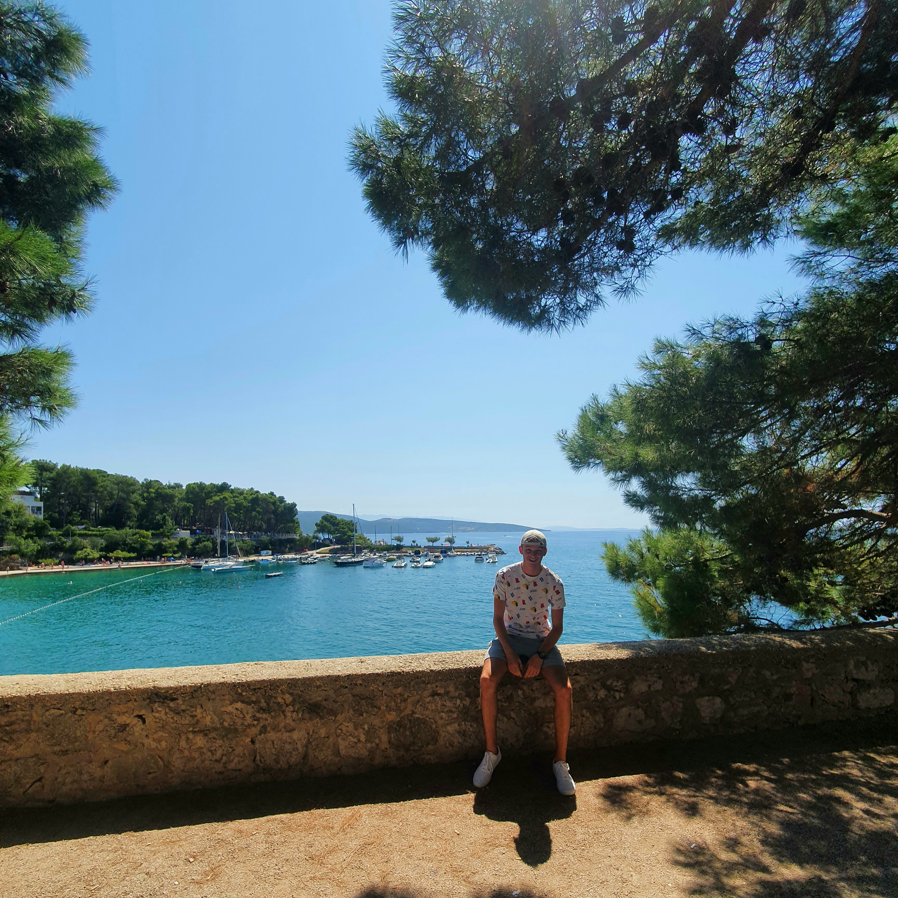
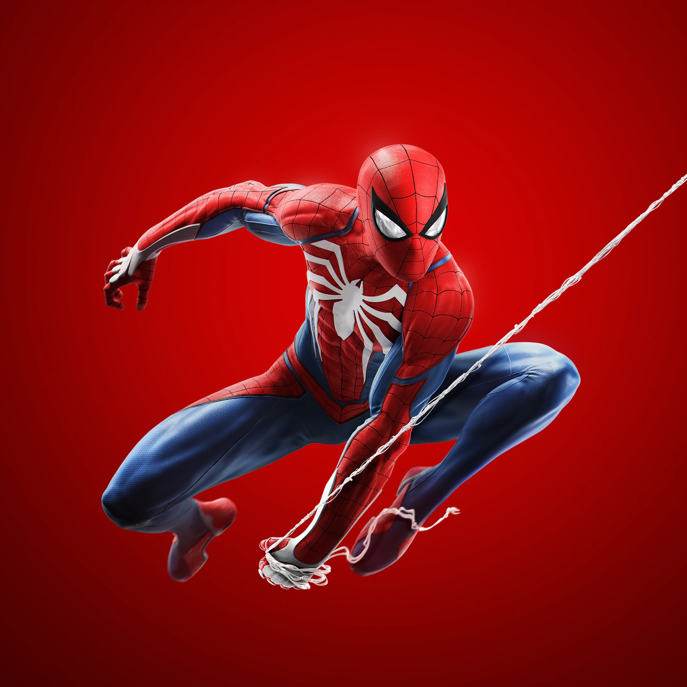
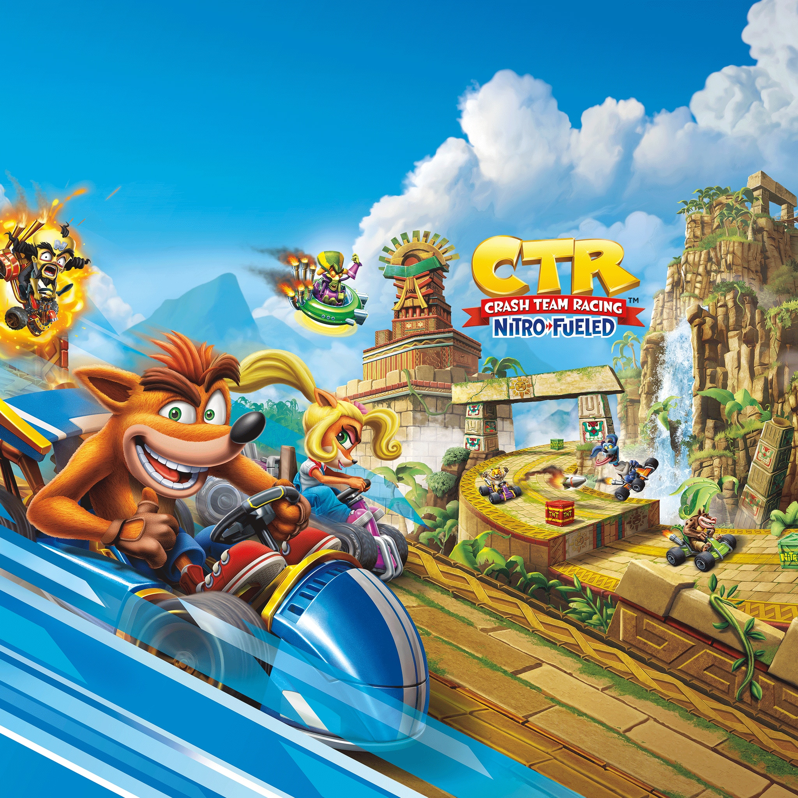
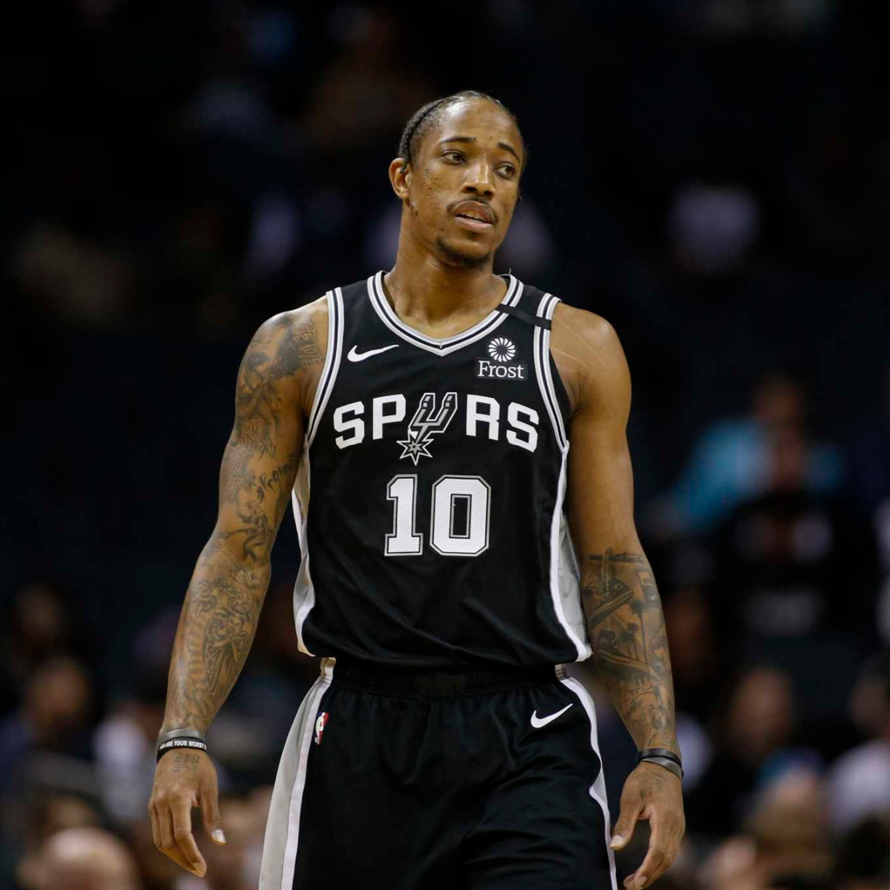

Mijn naam is Borna Vileta. Ik ben 17 jaar en ik woon
in Vlissingen met mijn ouders en een broertje.
Ik ben na 5 jaar havo afgestudeerd van het Scheldemond College
waar ik het vakkenpakket cultuur en maatschappij had.
Ik hou me in mijn vrije tijd met van alles bezig: ik speel al zo'n tien jaar
basketbal, spreek vaak met vrienden af, kijk graag films en sport en zo
af en toe game ik ook online.
Mijn beide ouders komen uit Kroatië, maar wonen nu al een lange tijd hier in
Nederland. Dit betekent echter wel dat ik tweetalig ben opgevoed, terwijl ik al mijn
hele leven in Nederland leef. Bijna heel mijn familie woont nog wel in Kroatië.
In mijn vrije tijd werk ik al bijna een jaar een paar dagen per week bij de Jumbo. Ook
ga ik graag met vrienden naar de bioscoop als er een nieuwe Marvel film uit is. Mijn
favoriete fictieve personage is Peter Parker, ook wel bekend als Spider-Man. Naast
films kijk ik ook veel NBA highlights, clips en soms zelfs wedstrijden midden in de
nacht. Mijn favoriete NBA speler is zonder twijfel DeMar DeRozan.



